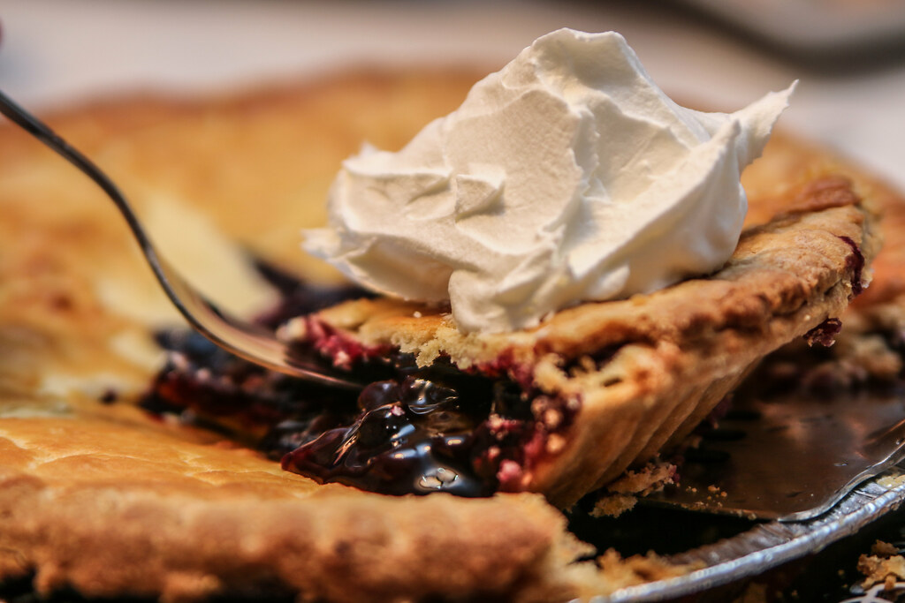

Blueberry Pie Filling

Description
A soul-warming pie filling.
Fresh or frozen blueberries can be used to make this amazing pie filling.
Ingredients
- 1 tbsp unsalted butter
- 1 cup blueberries
- 1/2 cup sugar
- 2 tbsp cornstarch
- 1 tbsp lemon juice
- 8 oz. cream cheese
- 1 3/4 cup ricotta cheese
Steps
- In saucepan, melt butter over medium heat.
- Add blueberries, and cook until berries have popped and softened (about 5 minutes).
- In a bowl, mix sugar and cornstarch together. Stir this mixture, along with the citrus juice, into the blueberry sauce.
- Cook until sauce thickens well (about 5-10 minutes).
- Remove from heat, and stir in cheeses.
- Blend until smooth. Add blue food coloring as desired (optional).